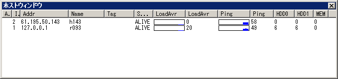
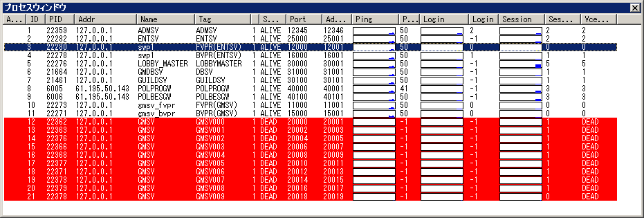
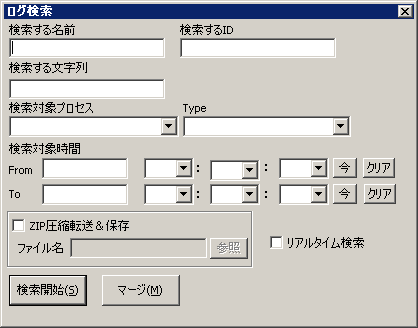

このウィンドウは、ホストの状態を表示する。
各項目の見出し列をクリックする事で、その項目でソートする事が出来き、
また、各行は複数選択が可能で、一部コマンド以外は複数行を同時に選択して実行する事が出来る。
設定した条件を満たした時に「！」マークが出現し、注意を促す。
admsv がホスト毎に与えた一意のID番号。
ホストのIPアドレス。
ホスト名。
管理用Tag。admsv 設定ファイル又はクライアントから自由に設定出来る。 管理しやすいように、それぞれ指定する。
ホストの状態を表す。DEAD,INIT,ALIVE の３つの状態があり、DEAD,INIT の場合は行が赤く表示される。
DEAD : rsvへのコネクションが張れない(rsvが動いていないか、ネットワークが切断している)
INIT : rsvへのコネクションは張れているが、pingが帰って来ない(rsvが起動しているが、止まっている)
ALIVE : rsvが正常に稼働している。
ホストのロードアベレージ。1000 倍した値が表示されている。
ロードアベレージのグラフ。[ツール]-[設定]-[グラフ] で カスタマイズが可能ある。
ホストとのping値。単位はミリ秒。
Pingのグラフ。[ツール]-[設定]-[グラフ] で カスタマイズ可能である。
ホストウィンドウでは、以下の操作を行う事が出来る。 ホストウィンドウの操作は、ウィンドウメニューの[ホスト]から、またはホストウィンドウ上で右クリックする事によって現れるメニューから行う。
ウィンドウ情報の自動更新のOn/Offを切り替える。
ウィンドウ情報を更新する。
UNIXコマンドを実行する。ホストで実行されている rsv がコマンドを受取り、実行する。コマンド結果は結果ウィンドウに出力される。
ホストのTAGの編集をする。権限制限がある。
新しくホストを追加する。追加するホストのIPアドレス、Tagを指定する。権限制限がある。
ホストを削除する。権限制限あり。

このウィンドウは、各ホスト上で動作している VCE monitor API によって管理する事の出来るプロセス群の状態を表示している。 各項目の見出し列をクリックする事で、その項目でソートする事が出き、 また、各行は複数選択が可能で、一部コマンド以外は複数行を同時に選択して実行する事が出きる。
設定した条件を満たした時に「！」マークが出現し、注意を促す。
プロセスのUNIXプロセスID(psコマンドで表示されるもの)
admsv がプロセス毎に与えた一意のID番号。ログ検索などで、対象プロセスの指定識別子として使用する。
プロセスが動作しているホストのIPアドレス
プロセスの名前。 'get_name'モニターコマンドで返された名前である。 サーバーを識別するための名前を返すようアプリケーションを作るとよいであろう。
管理用Tag。admsv 設定ファイル又はクライアントから自由に設定出来る。
プロセスの状態を表す。ホストのStateと同じく、DEAD,INIT,ALIVE の３つの状態があります。DEAD,INIT の場合は行が赤く表示される。
DEAD: プロセスへのコネクションが張れない(プロセスが動いていないか、ネットワークが切断している)
INIT: プロセスへのコネクションは張れているが、pingが帰って来ない(プロセスが起動しているが、止まっている、もしくは、vceのバージョンが違うとINITになる場合もある)
ALIVE: プロセスが正常に稼働している。
プロセスの種類。現在は、VCE を使用したプロセスである事を示す 1 しかない。
プロセスが使用しているサービスのポート。
これは、vce_tcpcontext_create関数で一番最初に作られたサーバーコンテキストのポート番号を示す。
管理用のVCE-Monitorポート
プロセスへの ping 値（単位：ミリ秒）。 アプリケーションレベルでの ping の為、数値はアプリケーションの状態に左右される。vce_heatbeatの１回当たりの時間が長いと、この値も大きくなる。
Pingのグラフ。[ツール]-[設定]-[グラフ] で カスタマイズ可能。
VCE monitor APIを使用して得た、プロセスへの login 数。 プロセスは、get_login モニターコマンドに反応するように作成されなければならない。
Loginのグラフ。[ツール]-[設定]-[グラフ] で カスタマイズ可能。
Portで示されたtcpcontextのコネクション数。
Session のグラフ。[ツール]-[設定]-[グラフ] で カスタマイズ可能。
未決定
プロセスウィンドウでは、以下の操作を行う事が出来る。 プロセスウィンドウの操作は、ウィンドウメニューの[プロセス]から、またはプロセスウィンドウ上で右クリックする事によって現れるメニューから行う。
ウィンドウ情報の自動更新のOn/Offを切り替える。
ウィンドウ情報を更新する。
モニターコマンドを実行する。コマンド結果は結果ウィンドウに出力される。 右クリックで表示されるポップアップメニューでは、 「手動コマンド実行」と、pint、netstatのメニューがある。 各モニターコマンドは、プロセスが実行する事の出来るモニターコマンドが一覧になって表示され、選択するとダイアログにモニターコマンドが入力された状態で表示される(未実装)。手動の場合は何も入っていないダイアログが表示される。 実行できるコマンドはVCE-admin組込み時に設定されたものである。
プロセスを起動/停止/再起動する。起動、再起動は起動コマンドの設定をあらかじめ行うか、admsv サーバー設定ファイル(admsv.list)で設定をしていなければならない。起動ログの表示 でプロセス起動の結果を確認できる。
プロセスのTAGの編集をする。権限制限がある。（未実装)
プロセスの作成、削除を行う。権限制限がある。（未実装）
プロセスを起動する為の起動コマンドを設定する。これが正しく設定されていないとプロセスが起動しない。(現在未実装であるため、admsvの設定ファイルで設定を行う。)
各プロセスが生成するログをこのウィンドウから grep like に検索する事が出来る。対象ログは、VCE ログフォーマット に従っているログのみである。

検索対象の名前（キャラ名など）を入力する。完全一致検索である。
検索対象のID(ユーザーIDなど)を入力する。完全一致検索である。
検索する文字列を指定する。log format の自由文字列部分を検索する。
名前、ID、文字列はどれか１つは指定しなければならない。
検索対象プロセスを指定する。コンボボックスのドロップダウンリストに指定可能なプロセスが表示されているので選択する。（必須）
検索対象のlog のtypeを指定します。それぞれのプロセスで指定可能なtypeがコンボボックスのドロップダウンリストに入力されているので、それを指定してください。(必須)
Fromのみ を省略するとログの最初から、To を省略すると検索を開始した時間まで、 両方省略するとリアルタイム検索になる。
検索結果を圧縮し、ファイルに保存する。データはサーバーで圧縮され転送される。
これをチェックすると、検索対象時間が無視され随時検索となり、新しくログが入力されると即検索され、出力される。
このボタンを押すと検索を開始し、検索結果ウィンドウが開き検索結果が表示される。
複数の検索結果のログを連結して時系列にソートし、新しいウィンドウに出力する。
admcliでチャットを行う為には、チャットルームという、サブジェクト毎に別れた部屋に入室して行う。チャットルームは複数入室する事ができる。
チャットリストウィンドウでは、チャットルームの一覧を表示しています。
部屋のID番号。部屋を識別するのに使用する。
部屋の名前。その部屋で話すサブジェクトに関連した名前にすると良いだろう。
チャットルームを作成する。
指定したチャットルームを削除する。
指定したチャットルームに入室する。入室しないとチャットは出来ない。
指定したチャットルームから退室する。チャットウィンドウをクローズする事でも退室と同じ操作になる。
部屋に入室する際にはニックネームが設定されていなければならない。[ツール]-[設定]-[ネットワーク] で設定します。その設定されていなければ入室時に設定ダイアログが表示されるのでニックネームを指定する。
部屋に入室すると、チャットウィンドウが開き、部屋に既に入室しているメンバーが Member ウィンドウに表示される。 chat とタイトルバーに書かれたウィンドウの上部がチャットログ表示ウィンドウ、下部が入力ウィンドウである。入力ウィンドウに発言したい分を入力し、Enter キーを押す事によって発言する。
admcli の動作の詳細をログしているウィンドウでである。
ホストのUNIXコマンド実行時、プロセスのモニタコマンドの実行時に、結果が表示される。
ログ検索の検索結果が出力される。 このウィンドウはTABまたはMDIウィンドウで、フローティングや他のウィンドウ（検索結果、マージ結果ウィンドウ以外）との連結などを行う事が出来ない。
アラートのログが出力されます。
[ツール]-[設定] メニューで表示されるダイアログにて、admcli の様々な設定を行う事が出来る。
システムログ、結果ログの表示行数を設定する。あまり多すぎると重くなるので注意する。デフォルトは 500。
接続するadmsvの情報の設定を行うことができる。[新規作成]、[削除]で名前をつけて情報を登録、削除することができる。
[新規作成]
[削除]
各項目は以下の通りである。
admsv ログイン用ユーザーID を設定する。
admsv ログイン用ユーザーID のパスワードを設定する。
チャットで使うニックネームを設定する。
このチェックを ON にすると、admcli.exe 起動時に自動的にログインする。
このチェックを ON にすると、接続が切断された場合に自動的に再接続する。
admsv のサーバーアドレスを指定する。このアドレスに admcli は接続しようとする。
admsv のポートを指定する。
ネットワークの処理を行う間隔。短い程処理を短い間隔で実行する。
システムログを保存するファイルを置くディレクトリを指定する。
システムログファイルは自動で生成されるが、その時にファイル名に付ける接頭辞(prefix)を指定する。システムログファイルは
[システムログ保存ディレクトリ]\[接頭辞]_YYYYMMDD.txtという形式で出力される。
結果ログを保存するファイルを置くディレクトリを指定する。
結果ログファイル名の接頭辞を指定する。結果ログも、システムログファイル名と同じ命名規則で出力される。
アラートログを保存するファイルを置くディレクトリを指定します。
アラートログファイル名の接頭辞を指定する。アラートログも、システムログファイル名と同じ命名規則で出力される。
グラフのログ（データ）を保存するファイルを置くディレクトリを指定する。
グラフログファイル名の接頭辞を指定する。グラフログファイルの命名規則は、
[グラフログ保存ディレクトリ]\[接頭辞]_[identifier]_[kind]_[id]_YYYYMMDD.txtという形式である。例えば、ホスト情報のping値のログだと、
graphlog/graphlog_host_ping_1_20030811.txtというように出力される。
グラフ１データがX軸１つに相当する。件数を変化させるとグラフのX軸の長さも変化する。
最低値とは、グラフのY軸の下のラインの基準値である。この基準値より小さいデータは表示されない。 最大値は、グラフのY軸の上のラインの基準値である。この基準値より大きいデータは、基準値までの長さでしか表示されない。
ウィンドウ毎にフォントの指定が出来る。現在指定可能なウィンドウは、
アラートを設定すると、設定した条件を満たした場合に、ホストやプロセスウィンドウのアラート項目に「!」マークが出現し、行が黄色く表示される。また、アラート時に音を鳴したりアプリケーションを実行する事も出来る